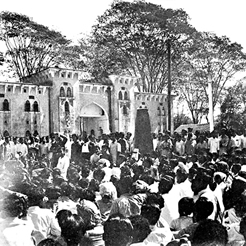

Language Movement:
Language Movement began in 1948 and reached its climax in the killing of 21 February 1952, and ended in the adoption of Bangla as one of the state languages of Pakistan. The question as to what would be the state language of Pakistan was raised immediately after its creation. The central leaders and the Urdu-speaking intellectuals of Pakistan declared that urdu would be the state language of Pakistan, just as Hindi was the state language of India. The students and intellectuals of East Pakistan, however, demanded that Bangla be made one of the state languages. After a lot of controversy over the language issue, the final demand from East Pakistan was that Bangla must be the official language and the medium of instruction in East Pakistan and for the central government it would be one of the state languages along with Urdu. The first movement on this issue was mobilised by Tamaddun Majlish headed by Professor Abul Kashem. Gradually many other non-communal and progressive organisations joined the movement, which finally turned into a mass movement. Meanwhile, serious preparation was being taken in various forums of the central government of Pakistan under the initiative of Fazlur Rahman, the central education minister, to make Urdu the only state language of Pakistan. On receipt of this information, East Pakistani students became agitated and held a meeting on the Dhaka University campus on 6 December 1947, demanding that Bangla be made one of the state languages of Pakistan. The meeting was followed by student processions and more agitation. The first Rastrabhasa Sangram Parishad (Language Action Committee) was formed towards the end of December with Professor Nurul Huq Bhuiyan of Tamaddun Majlish as the convener. Student meeting at Amtala in Dhaka University (1952) The Constituent Assembly of Pakistan was in session at Karachi-then the capital of Pakistan-from 23 February 1948. It was proposed that the members would have to speak either in Urdu or in English at the Assembly. dhirendranath datta, a member from the East Pakistan Congress Party, moved an amendment motion to include Bangla as one of the languages of the Constituent Assembly. He noted that out of the 6 crore 90 lakh population of Pakistan, 4 crore 40 lakh were from East Pakistan with Bangla as their mother tongue. The central leaders, including liaquat ali khan, prime minister of Pakistan, and khwaja nazimuddin, chief minister of East Bengal, opposed the motion. On receiving the news that the motion had been rejected, students, intellectuals and politicians of East Pakistan became agitated. Newspapers such as the Azad also criticised of the politicians who had rejected the motion. A new committee to fight for Bangla as the state language was formed with Shamsul Huq as convener. On 11 March 1948 a general strike was observed in the towns of East Pakistan in protest against the omission of Bangla from the languages of the Constituent Assembly, the absence of Bangla letters in Pakistani coins and stamps, and the use of only Urdu in recruitment tests for the navy. The movement also reiterated the earlier demand that Bangla be declared one of the state languages of Pakistan and the official language of East Pakistan. Amidst processions, picketing and slogans, leaders such as Shawkat Ali, Kazi Golam Mahboob, Shamsul Huq, Oli Ahad, sheikh mujibur rahman, Abdul Wahed and others were arrested. Student leaders, including Abdul Matin and abdul malek ukil, also took part in the procession and picketing. A meeting was held on the Dhaka University premises. Mohammad Toaha was severely injured while trying to snatch away a rifle from a policeman and had to be admitted to hospital. Strikes were observed from 12 March to 15 March. Under such circumstances the government had to give in. Khwaja Nazimuddin signed an agreement with the student leaders. However, although he agreed to a few terms and conditions, he did not comply with their demand that Bangla be made a state language. muhammed ali jinnah, the governor general of Pakistan, came to visit East Pakistan on 19 March. He addressed two meetings in Dhaka, in both of which he ignored the popular demand for Bangla. He reiterated that Urdu would be the only state language of Pakistan. This declaration was instantly protested with the Language Movement spreading throughout East Pakistan. The Dhaka University Language Action Committee was formed on 11 March 1950 with Abdul Matin as its convener. By the beginning of 1952, the Language Movement took a serious turn. Both Jinnah and Liaquat Ali Khan were dead-Jinnah on 11 September 1948 and Liaquat Ali Khan on 16 October 1951. Khwaja Nazimuddin had succeeded Liaquat Ali Khan as prime minister of Pakistan. With the political crisis, the economic condition in East Pakistan also deteriorated. The people of East Pakistan started losing faith in the Muslim League. A new party, the Awami Muslim League-which would later become the awami league-was formed under the leadership of maulana abdul hamid khan bhasani in 1949. There was a growing sense of deprivation and exploitation in East Pakistan and a realisation that a new form of colonialism had replaced British imperialism. Under these circumstances, the Language Movement got a new momentum in 1952. On 27 January 1952, Khwaja Nazimuddin came to Dhaka from Karachi. Addressing a meeting at Paltan Maidan, he said that the people of the province could decide what would be the provincial language, but only Urdu would be the state language of Pakistan. There was an instantaneous, negative reaction to this speech among the students who responded with the slogan, 'Rashtrabhasha Bangla Chai' (We want Bangla as the state language). A strike was observed at Dhaka University on 30 January. The representatives of various political and cultural organisations held a meeting on 31 January chaired by Moulana Bhasani. An All-Party Central Language Action Committee was formed with Kazi Golam Mahboob as its convener. At this time the government also proposed that Bangla be written in Arabic script. This proposal was also vehemently opposed. The Language Action Committee decided to call a hartal and organise demonstrations and processions on February 21 throughout East Pakistan. As preparations for demonstrations were underway, the government imposed Section 144 in the city of Dhaka, banning all assemblies and demonstrations. A meeting of the Central Language Action Committee was held on 20 February under the chairmanship of abul hashim. Opinion was divided as to whether or not to violate Section 144. Students gathering on a road in Dhaka University on 22 February 1952 The students were determined to violate Section144 and held a student meeting at 11.00 am on 21 February on the Dhaka University campus, then located close to the Medical College Hospital. When the meeting started, the Vice-Chancellor, along with a few university teachers, came to the spot and requested the students not to violate the ban on assembly. However, the students, under their leaders - Abdul Matin and gaziul haque - were adamant. Thousands of students from different schools and colleges of Dhaka assembled on the university campus while armed police waited outside the gate. When the students emerged in groups, shouting slogans, the police resorted to baton charge; even the female students were not spared. The students then started throwing brickbats at the police, who retaliated with tear gas. Unable to control the agitated students, the police fired upon the crowd of students, who were proceeding towards the Assembly Hall (at present, part of Jagannath Hall, University of Dhaka). Three young men, rafiq uddin ahmed, abdul jabbar and abul barkat (an MA student of Political Science) were fatally wounded. Many injured persons were admitted to the hospital. Among them abdus salam, a peon at the Secretariat, subsequently succumbed to his wounds. A nine-year-old boy named Ohiullah was also killed. At the Legislative Assembly building, the session was about to begin. Hearing the news of the shooting, some members of the Assembly, including maulana abdur rashid tarkabagish and some opposition members, went out and joined the students. In the Assembly, nurul amin, chief minister of East Pakistan, continued to oppose the demand for Bangla. The next day, 22 February, was also a day of public demonstrations and police reprisals. The public performed a janaza (prayer service for the dead) and brought out a mourning procession, which was attacked by the police and the army resulting in several deaths, including that of a young man named Shafiur Rahman. Many were injured and arrested. On 23 February, at the spot where students had been killed, a memorial was erected. In 1963, the temporary structure was replaced by a concrete memorial, the shaheed minar (martyrs' memorial). The East Bengal Legislative Assembly adopted a resolution recommending the recognition of Bangla as one of the state languages of Pakistan. The language movement continued until 1956. The movement achieved its goal by forcing the Pakistan Constituent Assembly in adopting both Bangla and Urdu as the state languages of Pakistan. While the Assembly was debating on the language issue, Member Adel Uddin Ahmed (1913-1981; Faridpur) made an important amendment proposal, which was adopted unanimously by the Assembly (16 February 1956). Both Bangla and Urdu were thus enacted to be the state languages of Pakistan. Since 1952, 21 February has been observed every year to commemorate the martyrs of the Language Movement. With UNESCO adopting a resolution on 17 November 1999 proclaiming 21 February as international mother language day. It is an honour bestowed by the international community on the Language Movement of Bangladesh.